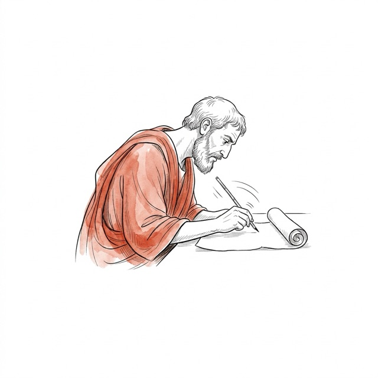
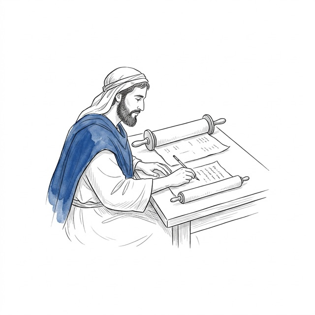
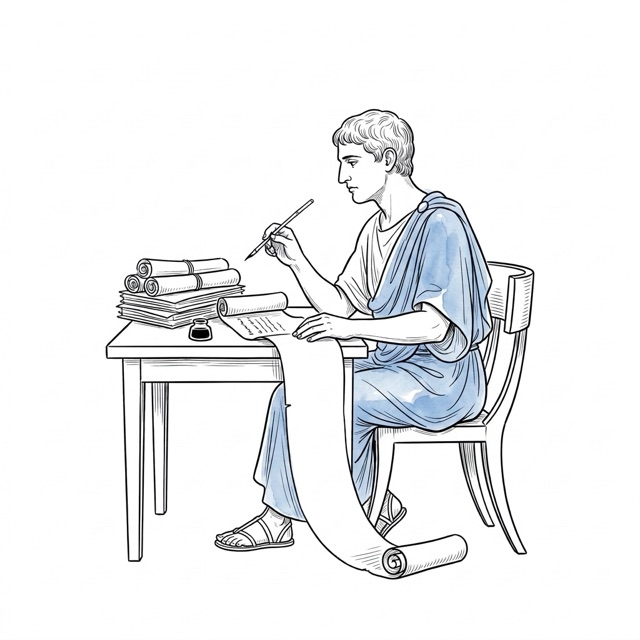
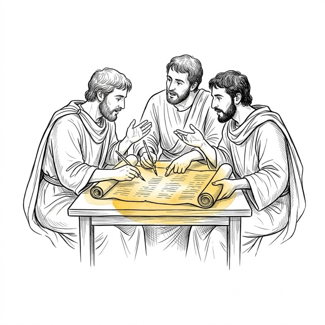

El nostre calendari compta els anys a partir d'un artesà jueu que no va escriure mai ni una sola línia. Tot el que sabem d'ell ens arriba per quatre llibres redactats dècades després, en un altre idioma i amb versions que no sempre encaixen. Aquesta és la història de la seva vida i de com es van escriure aquells llibres.
16 min de lectura · Dades: text grec SBLGNT (MorphGNT), taules d'Eusebi de Cesarea, relleu NASA SRTM, Bíblia catalana interconfessional · Actualitzat el 19 de novembre de 2026
Imagina que haguessis d'escriure la biografia d'algú que va morir fa quaranta anys sense deixar cap diari ni cap carta, en un altre idioma i a partir del que recorda la gent. Així van néixer els quatre evangelis —del grec euangélion, «bona notícia»— que obren el Nou Testament: Marc, Mateu, Lluc i Joan.1
No són quatre còpies idèntiques: dos no expliquen el naixement, tres s'assemblen tant que comparteixen frases senceres i el quart sembla gairebé una altra història. Per entendre qui era el Jesús real del segle I i per què en tenim quatre retrats, comencem mirant la fotografia sencera.2
Una sola vida, quatre llibres: 64.298 paraulesCada traç són 100 paraules gregues reals. Jesús no va deixar res escrit; dècades després, quatre relats n'expliquen la vida — en part compartida i en part pròpia
Dades reals. Extensió en paraules gregues SBLGNT (Marc fins a 16,8; 64.298 en total) i proporció de material compartit o exclusiu segons les taules d'Eusebi de Cesarea. Datacions orientatives de consens acadèmic. Passa el cursor o toca qualsevol llibre per llegir-ne el desglossament.
Qui els va escriure — i per què els posem nom
Abans d'entrar en dates i mapes, convé desfer un malentès molt estès: cap dels quatre evangelis no porta firma. Si obres el text grec original, no hi trobaràs enlloc «jo, Mateu, he escrit aquest llibre» ni una data al final. Tots quatre van néixer anònims i van circular sense nom d'autor durant dècades.11
Llavors, per què els anomenem Marc, Mateu, Lluc i Joan? Quan al segle II les comunitats cristianes comencen a aplegar més d'un evangeli en una mateixa col·lecció, necessiten distingir-los. La tradició d'aquella època —ja documentada al segle II i defensada per bisbes com Ireneu de Lió cap al 180— hi va posar títols en grec: segons Marc, segons Mateu, segons Lluc, segons Joan, atribuint cada text a un apòstol o a un company dels apòstols per enllaçar-lo amb la primera generació. Els historiadors continuen fent servir aquests noms per convenció, però els llibres mateixos deixen pistes molt clares sobre qui —o quins— hi havia realment al darrere:

Marc
El cronista apressat · una sola mà
≈ 65–75 · 11.085 par.
Qui l'escriu: un autor anònim de parla grega, d'estil directe i popular, prop de la destrucció del Temple (any 70). Tradueix expressions aramees i explica costums jueus per a lectors sobretot no jueus.
Per què es diu «Marc»: al segle II la tradició el va atribuir a Marc, company i intèrpret de l'apòstol Pere, per vincular el primer evangeli amb el testimoni de Pere.

Mateu
L'escriba jueu · dos rotlles oberts
≈ 80–90 · 18.329 par.
Qui l'escriu: un autor jueu culte de parla grega —probablement un escriba o mestre d'una comunitat d'arrel jueva— que coneix a fons les Escriptures hebrees i amplia el relat de Marc amb dites de Jesús.
Per què es diu «Mateu»: el text no es firma mai, però la tradició el va associar al recaptador d'impostos dels Dotze (el «Leví» de Marc que aquest evangeli anomena «Mateu»).

Lluc
L'historiador literari · fonts ordenades
≈ 80–100 · 19.446 par.
Qui l'escriu: un escriptor anònim amb molt bon grec —també autor dels Fets dels Apòstols— que escriu per a «Teòfil». Al pròleg (Lc 1,1–4) admet que no va ser testimoni presencial, sinó que ha investigat relats anteriors.
Per què es diu «Lluc»: al segle II se'l va identificar amb Lluc, el metge company de viatge de Pau, pels passatges en primera persona del plural («nosaltres») dels Fets.

Joan
Una comunitat · diverses mans i capes
≈ 90–110 · 15.438 par.
Qui (o quins) l'escriuen: més que una sola persona, la majoria d'estudiosos hi veuen una comunitat o escola redactant en diverses capes. Al final (Jn 21,24), unes veus en plural («nosaltres sabem…») avalen un «deixeble estimat» anònim.
Per què es diu «Joan»: la tradició del segle II va identificar aquell deixeble anònim amb Joan, fill de Zebedeu, un dels dotze apòstols, i va posar el seu nom al llibre.
1. Quan va viure i quan se'n va escriure
La primera sorpresa per a qualsevol lector és que entre la mort de Jesús i el primer evangeli que conservem passen prop de quaranta anys. Durant dues dècades senceres no tenim ni una sola paraula escrita sobre ell: les històries, les paràboles i els records viatgen únicament de boca en boca, traduïts de l'arameu —la llengua quotidiana de Jesús— al grec, l'idioma comú del Mediterrani oriental.3
Baixa per veure com encaixen els dos rellotges d'aquesta història: els anys en què va viure Jesús i els segles en què els altres van posar la seva memòria per escrit.
Cap al 6 aC – cap al 30 dC
Primer passa la vida. Jesús neix uns anys abans de l'any zero del nostre calendari, viu la seva joventut a Galilea i mor executat pels romans a Jerusalem cap a l'any 30. Cap document de la seva època no en registra les dates exactes: per això els historiadors parlen de marges, no de dies concrets.4
Anys 30 – anys 50
Vint anys de memòria oral. Després de la seva mort, els seus seguidors comencen a explicar què havia fet i dit. No escriuen biografies: molts creuen que el món canviarà molt aviat. La història passa de persona a persona i salta de l'arameu al grec.5
Cap al 50 – cap al 58
Les primeres paraules escrites són cartes. Abans que existeixi cap evangeli, un predicador jueu anomenat Pau envia cartes a comunitats noves de Grècia i Turquia (com Tessalònica o Corint). No hi explica la vida sencera de Jesús, però ja hi esmenta el darrer sopar, la crucifixió i la fe en la resurrecció.6
Cap al 65 – cap al 110
Neixen els quatre evangelis. Quan la generació que havia conegut Jesús comença a desaparèixer —i els romans destrueixen el Temple de Jerusalem l'any 70—, els records es posen per escrit. Primer arriba Marc (cap al 70), després Mateu i Lluc (anys 80–100) i finalment Joan (cap al final del segle I).7
93–94 i principis del segle II
Dues mirades des de fora. Més enllà dels textos cristians, dos historiadors antics —el jueu Flavi Josep (any 93–94) i el romà Tàcit (principis del s. II)— esmenten Jesús en poques línies. Són breus, però confirmen fora de l'Església que va existir, tenia un germà anomenat Jaume i va ser executat per Ponç Pilat.8
Cap al 150 – 367
Com es fixen exactament aquests quatre. Al segle II circulaven més relats sobre Jesús. Cap al 180, el bisbe Ireneu defensa que els evangelis legítims són només quatre. No és fins al 367 que Atanasi d'Alexandria enumera la llista exacta dels 27 llibres del Nou Testament actual. Passa el cursor o el dit per cada franja per veure quants anys separen cada text de la creu.9
La vida, el silenci i els llibresCinc blocs separats: la vida real, les cartes de Pau, els quatre evangelis, les fonts externes (jueva i romana) i el cànon
Esquema cronològic amb datacions orientatives de consens acadèmic (Sanders, Martin, Lathrop). L'escala temporal s'estreny a partir de l'any 120. Fonts: notes 4 a 9.
Aquest ordre temporal amaga un detall que confon gairebé tothom qui obre la Bíblia per primera vegada: els llibres del Nou Testament no estan ordenats per data. A la Bíblia, el primer que trobes és l'Evangeli de Mateu, seguit de Marc, Lluc i Joan, i les cartes de Pau apareixen molt més endavant. Però si els ordenem tal com es van escriure realment, la biblioteca gira com un mitjó.10
Cap dels quatre evangelis no porta el nom de l'autor al text original ni cap data al final. Els títols «segons Mateu», «segons Marc», «segons Lluc» i «segons Joan» s'hi van afegir més tard per tradició.11
L'ordre de la Bíblia no és l'ordre d'escripturaCada punt són 100 paraules del text grec original. Canvia de vista per veure com es mou cada llibre
Dades reals per a l'extensió: recompte de paraules gregues del text SBLGNT (Marc fins a 16,8). Ordre cronològic orientatiu: les set cartes de Pau d'autoria àmpliament acceptada (anys 50) i els quatre evangelis (65–110). Els altres llibres del Nou Testament, de datació més debatuda, no es col·loquen al calendari.10
2. On va passar tot? Un país petit dividit en dos
Tota la història de Jesús cap en una franja de terra sorprenentment petita, a l'extrem oriental del mar Mediterrani: uns 200 quilòmetres de nord a sud, menys que la distància entre Puigcerdà i Tortosa. Però aquell racó de l'Imperi romà no era un paisatge pla ni un sol territori unit.12
Dues coses governaven la vida quotidiana d'aquell país: el relleu —amb muntanyes altes i la vall del riu Jordà enfonsada centenars de metres sota el nivell del mar— i la política. Quan Jesús era adult, el nord (Galilea) i el sud (Judea, amb Jerusalem) tenien governants diferents. Baixa per recórrer el mapa real d'aquell territori.
Un racó del Mediterrani romà. Entre la costa mediterrània i el desert s'estén una vall enfonsada única al planeta: el riu Jordà surt del llac de Galilea (a 212 metres sota el nivell del mar) i desemboca al mar Mort (a més de 400 metres sota el mar). A les muntanyes que envolten aquesta fossa hi ha Natzaret i Jerusalem.13
Natzaret i el llac de Galilea. Jesús creix a Natzaret, un poblet rural de muntanya que ni tan sols surt esmentat a l'Antic Testament. Allà el coneixen com «l'artesà» (téktōn, un treballador manual de la fusta o la pedra). De gran, es trasllada a la riba nord del llac de Galilea —a Cafarnaüm i pobles de pescadors veïns—, a una jornada llarga a peu de casa.14
Dos governants, una frontera invisible. Galilea la governa Herodes Antipes, un príncep jueu fidel a Roma. Judea i Jerusalem, en canvi, estan sota el control directe d'un prefecte militar romà: Ponç Pilat (del 26 al 36 dC). Sortir de Galilea per anar a Jerusalem volia dir entrar a la ciutat del Temple, el cor religiós del judaisme, vigilat de prop per Roma.15
L'únic viatge de Marc. Si llegeixes l'Evangeli de Marc, Jesús passa gairebé tota la seva activitat al voltant del llac de Galilea i només baixa una vegada a Jerusalem per celebrar la Pasqua: uns 140 quilòmetres a peu, resseguint la vall del Jordà i passant per Jericó. Aquell únic viatge acaba en la seva mort.16
Les quatre pujades de Joan. L'Evangeli de Joan explica un itinerari molt diferent: Jesús va i ve entre Galilea i Jerusalem diverses vegades i hi celebra tres Pasqües diferents. És d'aquest detall de Joan d'on surt la idea popular que la vida pública de Jesús va durar uns tres anys. Els altres tres evangelis no ho diuen mai.17
El territori dels evangelisRelleu topogràfic real (NASA SRTM). En blau clar, la vall del Jordà per sota del nivell del mar
Dades reals. Relleu topogràfic NASA SRTM (cel·les d'1,2 km) amb corbes de nivell cada 300 m; costa i llacs actuals de Natural Earth (el mar Mort era més extens). Llocs segons la identificació arqueològica habitual (Betsaida i Canà, discutides). Regions orientatives.
Als evangelis es repeteix una expressió molt concreta: Jesús i els seus deixebles «pugen» a Jerusalem, encara que vinguin del nord. No era una manera de parlar ni una metàfora religiosa. Com que el camí baixava per la vall enfonsada del Jordà fins a Jericó —més de 200 metres sota el nivell del mar—, el tram final fins a Jerusalem era una pujada dura i seca de gairebé un quilòmetre de desnivell en poc més de vint quilòmetres. Com pujar a Montserrat des de la platja en una sola jornada a peu.18
«Pujar a Jerusalem» no era una metàforaPerfil real d'alçada del camí de Cafarnaüm a Jerusalem que narra Marc, desplegat en línia recta
Sota el nivell del mar
Dades reals d'alçada (NASA SRTM, cel·les d'1,2 km) sobre un esquema de ruta: Marc indica que Jesús baixa per l'altra banda del Jordà, passa per Jericó i arriba a Betània; el traçat exacte entre punts és orientatiu. Distàncies de cercle màxim.18
Hi ha una manera fascinant de veure on mira cada evangelista sense interpretar res: comptar quantes vegades anomena cada població en el text grec original. Els cercles parlen sols: Lluc anomena Jerusalem 31 vegades (més del triple que Marc), Mateu concentra el focus a Betlem i Galilea, i només Joan ens porta al casament de Canà o al pou de Sicar.32
On posa la càmera cada evangeli?Les quinze poblacions anomenades al text grec original. L'àrea de cada cercle translúcid és proporcional al nombre de mencions
Dades reals. Recompte de topònims sobre el text grec SBLGNT (MorphGNT, Marc fins a 16,8; sense adjectius com «natzarè» ni Betània de l'altra banda del Jordà). Passa per qualsevol població o cercle per veure les cites exactes.32
3. La vida de Jesús, pas a pas: què en sabem del cert?
Si ajuntem el que diuen els quatre evangelis, les cartes de Pau i les dues mencions d'historiadors no cristians, els historiadors actuals coincideixen en un esquelet sòlid de la vida de Jesús —i també assenyalen amb claredat els punts on els textos es contradiuen o callen.19
El naixement: per què el pessebre barreja dues històries
Ni Marc (el primer evangeli) ni Joan no expliquen res del naixement ni de la infància de Jesús. Només Mateu i Lluc ho fan, i cada Nadal barregem els seus dos relats dins del mateix pessebre sense adonar-nos que no encaixen gaire.20
A Mateu, la família ja viu en una casa a Betlem; uns savis d'Orient segueixen una estrella, el rei Herodes el Gran ordena matar els nens i la família ha de fugir a Egipte fins que, en tornar, s'instal·la a Natzaret. No hi ha ni cens, ni establia, ni pastors. A Lluc passa just al revés: la família ja viu a Natzaret, viatja a Betlem per un cens romà, el nen neix en una menjadora, el visiten uns pastors i després tornen tranquil·lament a Natzaret sense trepitjar mai Egipte.21
A més, les dates no quadren: Herodes el Gran va morir l'any 4 aC, mentre que el cens romà de Quirini que esmenta Lluc —i que l'historiador Flavi Josep data amb precisió— va tenir lloc l'any 6 dC, deu anys després. Per això la majoria d'historiadors situen el naixement de Jesús cap al 6–4 aC, i molts consideren que probablement va néixer a Natzaret i que els relats de Betlem serveixen per vincular-lo amb el rei David.22
Dos camins oposats cap a BetlemArrossega el divisor per comparar el viatge de la família segons Mateu (esquerra) i segons Lluc (dreta)
Esquema sobre relleu real (NASA SRTM). Recorreguts segons Mateu 1–2 i Lluc 1–2; els traçats són orientatius i Mateu no precisa a quin lloc d'Egipte s'aturen. A sota, la diferència de 10 anys entre la mort d'Herodes el Gran (4 aC) i el cens de Quirini (6 dC).22
El baptisme i els anys de Galilea (cap al 28–30 dC)
Quan Jesús té uns trenta anys, apareix al riu Jordà per fer-se batejar per Joan Baptista, un predicador jueu que cridava la gent a preparar-se per a un canvi imminent de Déu. Aquest és un dels fets més segurs de tota la biografia de Jesús: fins i tot l'historiador jueu Flavi Josep dedica un passatge propi a Joan Baptista i explica que Herodes Antipes el va fer executar perquè temia que provoqués una revolta.23
Després que empresonin Joan, Jesús comença a recórrer els pobles de Galilea anunciant que «el Regne de Déu és a prop». Per a un jueu del segle I sota ocupació romana, aquesta frase no parlava d'un cel després de la mort, sinó de l'esperança que Déu aviat posaria fi a les injustícies i transformaria el món. Jesús reuneix un grup de seguidors —pescadors, recaptadors d'impostos i també dones, com Maria Magdalena—, menja a taula amb gent mal vista, explica històries senzilles del camp i del mar (les paràboles) i guanya fama de guaridor.24
L'última setmana i la crucifixió (cap a l'any 30 dC)
Si mires quant d'espai dediquen els evangelis a cada etapa de la vida de Jesús, hi ha una desproporció impressionant. A l'Evangeli de Marc, més de trenta anys de vida i tota la predicació a Galilea ocupen dues terceres parts del llibre. De cop, quan Jesús entra a Jerusalem per la festa jueva de la Pasqua —moment en què la ciutat s'omplia de milers de pelegrins i la tensió política amb Roma era màxima—, la càmera s'alenteix: una sola setmana ocupa més d'un terç de tot el llibre, i les últimes vint-i-quatre hores en consumeixen el 15 %.25
Tots els episodis de Marc: l'explosió de l'última setmanaCada cercle translúcid és un dels 233 passatges reals de Marc (àrea = paraules gregues). La superposició marca on s'alenteix el relat
Dades reals. Totes les seccions d'Eusebi alineades amb el text grec SBLGNT (233 seccions a Marc fins a 16,8; 1.162 als quatre evangelis). A la segona vista, línies d'enllaç de setze episodis clau.25
A Jerusalem, Jesús protagonitza un gest molt visible al pati del Temple: tomba les taules dels qui hi canvien moneda i hi venen animals per als sacrificis. (Fixa't al gràfic anterior: mentre Marc, Mateu i Lluc posen aquesta escena a l'última setmana com a detonant del conflicte, Joan la situa al principi del seu llibre.) Pocs dies després, Jesús és detingut, portat davant el governador romà Ponç Pilat i condemnat a morir en una creu.26
La crucifixió és el fet històric més segur de tots. Era un càstig reservat per Roma a esclaus i rebels polítics, i el rètol penjat a la creu explicava el motiu de la sentència: «rei dels jueus». Des del punt de vista de Pilat, un predicador popular que anunciava un «regne» en plena festa de Pasqua era un focus potencial d'aldarulls.27
Què va passar després? A nivell històric, sabem amb certesa que molt poc temps després de l'execució, els seguidors de Jesús van començar a afirmar que Déu l'havia ressuscitat i que alguns l'havien vist viu. Però aquí tornen a aparèixer diferències notables entre textos: a la carta més antiga (Pau, cap al 55), Jesús s'apareix a Pere, als apòstols i a més de cinc-cents germans, sense esmentar cap tomba buida ni cap dona. Als evangelis, escrits dècades després, les primeres protagonistes són sempre unes dones davant la tomba oberta —i en el final original més antic de Marc, les dones fugen espantades i Jesús ressuscitat ni tan sols apareix.28
Les bíblies modernes imprimeixen dotze versets més al final de Marc (16,9–20), però els manuscrits més antics i les taules del segle IV mostren que aquell final llarg s'hi va afegir més tard.28
Qui veu Jesús ressuscitat, i on?Els cinc textos ordenats per data probable d'escriptura (de Pau a Joan). El color indica el lloc de l'aparició
Dades textuals recollides de la BCI: 1 Corintis 15,3–8; Marc 16,1–8 (final original); Mateu 28; Lluc 24 i Fets 1; Joan 20–21. Un cercle puntejat indica que el personatge només troba la tomba buida però no veu Jesús.28
4. Com es van escriure? El trencaclosques de les còpies
Ara que coneixem la història, arriba el gran misteri dels quatre evangelis. Si poses Mateu, Marc i Lluc de costat, descobreixes una cosa sorprenent: no només expliquen moltes vegades les mateixes escenes en el mateix ordre, sinó que sovint fan servir exactament les mateixes paraules en grec, fins i tot quan el narrador fa una pausa o un incís a mitja frase.29
Per això els estudiosos anomenen aquests tres llibres els evangelis sinòptics (del grec, «que es poden mirar junts»). Com és possible que tres autors escriguin frases quasi idèntiques? La resposta més senzilla és la que gairebé tothom ha descobert a l'escola: uns van copiar de l'altre.
Avui hi ha un consens molt ampli que Marc va ser el primer, i que tant Mateu com Lluc van tenir una còpia de Marc damunt la taula mentre escrivien el seu propi relat. De fet, el 94 % de les paraules de Marc reapareixen en algun altre evangeli! Però encara quedava un enigma: Mateu i Lluc comparteixen molts ensenyaments de Jesús —com el parenostre o les benaurances— que no són a Marc. D'on van sortir? Els historiadors proposen dues grans explicacions: o bé tots dos van fer servir una segona font perduda plena de dites de Jesús (batejada com a font Q, de l'alemany Quelle, «font»), o bé Lluc va llegir directament l'evangeli de Mateu.30
Com viatgen les històries d'un llibre a un altreAmplada dels corrents proporcional al volum real de paraules gregues. Canvia d'hipòtesi per veure com es mouen els fluxos
Cada partícula simbolitza el pas de relats i dites d'una font a un evangeli.
Esquema amb proporcions reals. Volums basats en les paraules compartides i exclusives de les taules d'Eusebi de Cesarea alineades amb l'SBLGNT (Marc fins a 16,8). La font Q és una hipòtesi acadèmica: no se n'ha trobat mai cap manuscrit.30
Aquesta comparació entre els quatre textos no és un invent modern. Ja al segle IV, un bisbe i erudit anomenat Eusebi de Cesarea va dividir cada evangeli en centenars de petits fragments numerats —1.162 en total— i va elaborar deu taules per saber exactament quins passatges es compartien entre quatre, tres o dos evangelis, i quins eren exclusius d'un de sol. Si deixem que aquests 1.162 punts s'agrupin segons quins evangelis els comparteixen, del caos aparent n'emergeix un mapa sorprenent.31
Topografia dels 1.162 fragments dels evangelisCada punt és un passatge real d'Eusebi, atret pels evangelis que el contenen. Les corbes de nivell revelen els blocs compartits i els exclusius
Dades reals. Totes les 1.162 seccions de les deu taules canòniques d'Eusebi de Cesarea (segle IV), edició digital de K. P. Edgecomb alineada amb SBLGNT (Marc fins a 16,8). Passa el cursor o toca qualsevol illa per veure quins episodis hi viuen.31
5. Quatre retrats d'un mateix home
Si els quatre llibres parlen del mateix Jesús, quina diferència hi ha entre obrir-ne un o un altre? Cadascun dels quatre autors escrivia per a una comunitat diferent, en un moment diferent i amb una mirada pròpia. Ni tan sols feien servir les mateixes paraules: Marc repeteix l'adverbi «de seguida» 42 vegades per donar sensació d'urgència; Lluc anomena Jerusalem 31 vegades perquè converteix la ciutat en el centre de tot el relat; Joan no utilitza ni una sola vegada la paraula «paràbola», però escriu el verb «creure» 98 vegades.32
En aquestes dues visualitzacions, les dades del text grec original dibuixen la personalitat de cada narrador. Primer, tria qualsevol paraula clau per veure on batega dins dels quatre llibres; després, mira com la rosa polar de Joan no s'assembla gens a la dels altres tres.
L'ADN verbal: 597 aparicions de set paraules clauCada cercle translúcid marca el punt exacte del llibre on apareix la paraula, amb la corba de densitat a sobre
Dades reals. Posició exacta de cada ocurrència del lema grec al text SBLGNT (MorphGNT 6.12, Marc fins a 16,8). Prova de saltar de «de seguida» (42 cops a Marc) a «paràbola» (0 a Joan) o «creure» (98 a Joan).32
Quatre roses polars: la personalitat de cada evangeliCada rosa mesura sis trets verificats del text grec sobre anells concèntrics (àrea proporcional). Passa per qualsevol sector per comparar-lo als quatre llibres
Dades reals. Extensió, pes de l'última setmana, paràboles (parabolḗ) i «creure» (pisteúō) comptats sobre MorphGNT/SBLGNT (Marc fins a 16,8); mencions de Jerusalem (topònims); material exclusiu segons les taules d'Eusebi.32
Marc Cap al 65–75 · 11.085 paraules
El més antic, el més curt i el més trepidant. Comença directament amb Jesús adult al riu Jordà. Els deixebles no entenen gairebé mai qui és, i el secret només es revela al peu de la creu, en boca d'un soldat romà.33
Mateu Cap al 80–90 · 18.329 paraules
Escriu per a una comunitat d'arrel jueva i retrata Jesús com un gran mestre, un nou Moisès que puja a la muntanya per ensenyar. Agrupa les seves paraules en cinc grans discursos, com el Sermó de la Muntanya.34
Lluc Cap al 80–100 · 19.446 paraules
El més llarg i literari, pensat per a lectors no jueus (i continuat als Fets dels Apòstols). Posa el focus en els pobres, els estrangers i les dones, i ens dona paràboles úniques com el bon samarità o el fill pròdig.35
Joan Cap al 90–110 · 15.438 paraules
El més tardà i filosòfic: tres quartes parts del llibre no surten enlloc més. Sense paràboles curtes ni naixement a Betlem, comença abans de la creació del món («Al principi existia la Paraula») i estructura la vida de Jesús en set grans «signes», com el casament de Canà o la resurrecció de Llàtzer.36
6. Per què en llegim quatre, i què queda del Jesús històric
Pot semblar estrany que el cristianisme no acabés fonent els quatre relats en una sola biografia oficial sense contradiccions. De fet, al segle II algú ho va intentar: un autor anomenat Tacià va cosir els quatre evangelis en un sol llibre continu, el Diatèssaron, que va tenir molt èxit a Síria durant segles.37
Però la tradició majoritària va fer l'aposta contrària. Cap a l'any 180, el bisbe Ireneu de Lió va defensar que els evangelis havien de ser exactament quatre —ni un de sol ni una dotzena— i els va comparar amb els quatre punts cardinals i els quatre vents. Gairebé dos segles més tard, el 367, Atanasi d'Alexandria va publicar en una carta de Pasqua la llista dels 27 llibres del Nou Testament que encara fem servir avui.38
I després de tot aquest viatge per mapes, dates i paraules, quin Jesús queda a les mans de la història? Queda un jueu de Galilea del segle I, criat a Natzaret, vinculat a Joan Baptista, que va reunir seguidors, va anunciar la proximitat del Regne de Déu amb paràboles memorables i va tenir fama de guaridor. Un home que va anar a Jerusalem per Pasqua, va protagonitzar una acció profètica al Temple i va morir crucificat sota el prefecte romà Ponç Pilat cap a l'any 30 —i els seguidors del qual van proclamar molt aviat que era viu.39
Que no tinguem una sola biografia polida, sinó quatre retrats escrits a distància, és precisament el que ens permet mirar per darrere del teló: veure alhora l'home de Galilea i com el recordaven, l'adaptaven i el discutien les primeres comunitats que van canviar la història del Mediterrani.
Paraules clau
Evangeli
Del grec euangélion, «bona notícia». Al principi designava el missatge oral sobre Jesús; més tard va donar nom als quatre llibres que en narren la vida.
Sinòptics
Mateu, Marc i Lluc. S'anomenen així perquè s'assemblen tant que es poden llegir en columnes paral·leles, «d'una sola mirada».
Font Q
De l'alemany Quelle («font»). Hipòtesi d'una col·lecció perduda de dites de Jesús que haurien fet servir tant Mateu com Lluc per explicar tot allò que comparteixen però que no surt a Marc. No se n'ha trobat mai cap còpia.
Taules d'Eusebi
Sistema creat al segle IV pel bisbe Eusebi de Cesarea que parteix cada evangeli en seccions numerades i indica en deu taules quins fragments tenen paral·lel als altres evangelis.
Cànon
Llista oficial de llibres reconeguts com a Escriptura sagrada per una comunitat religiosa.
Arameu i grec
Jesús i els seus primers seguidors parlaven arameu (una llengua semítica pròxima a l'hebreu), però tots els textos del Nou Testament que conservem van ser escrits en grec, la llengua franca del Mediterrani oriental.
Metodologia
Aquest article distingeix sempre entre dades reals verificables i esquemes o datacions orientatives. Els recomptes de paraules, posicions d'escenes, topònims i vocabulari provenen directament del text grec SBLGNT lematitzat (MorphGNT 6.12), comptant Marc fins a 16,8 (el final més antic documentat). Les proporcions de material compartit i exclusiu entre evangelis es calculen directament sobre les deu taules canòniques d'Eusebi de Cesarea alineades amb l'SBLGNT. El relleu dels mapes i del perfil de Jerusalem prové del model digital d'elevació NASA SRTM (cel·les d'1,2 km), combinat amb costes i llacs de Natural Earth. Les dates de naixement, mort i redacció dels textos són marges orientatius basats en el consens acadèmic contemporani (E. P. Sanders, Dale B. Martin, Gordon W. Lathrop).
Notes
Cada número del text porta aquí. La fletxa (↑) et torna al punt on llegies. Les cites bíbliques enllacen amb la Bíblia catalana interconfessional (BCI); els números entre claudàtors, amb les fonts.
↑ Perfil històric, llengua aramea i distància temporal dels textos: E. P. Sanders [3] i Dale B. Martin [3][7].
↑ Evolució del mot grec euangélion i formació del Nou Testament [7][8].
↑ Transmissió oral i datacions orientatives dels escrits del segle I [7][8].
↑ Naixement en vida d'Herodes, mort el 4 aC (Mt 2,1); predicació de Joan el quinzè any de Tiberi (Lc 3,1–3); crucifixió sota Pilat entre el 29 i el 33, sovint situada cap al 30 [3][4].
↑ Període oral entre la crucifixió i les primeres cartes conservades [3][7].
↑ Primera carta als Tessalonicencs (cap al 50) i Primera als Corintis (mitjan anys cinquanta): 1Co 11,23–26 (darrer sopar) i 1Co 15,1–11 (mort, sepultura i aparicions) [2][8].
↑ Destrucció del Temple de Jerusalem l'any 70 durant la Primera Guerra Judeoromana [3]. Datacions orientatives de Marc, Mateu, Lluc i Joan [7].
↑ Flavi Josep, Antiguitats jueves XX, 200 (Jaume, «germà de Jesús, l'anomenat Crist») i XX, 267 (data de l'obra: 93–94) [5]. Tàcit, Annals XV, 44 (Crist executat sota Tiberi per Pilat) [6].
↑ Justí, Primera apologia 66–67 [9]; Tacià [8]; Ireneu de Lió, Contra les heretgies III, 11, 8 [10]; Atanasi d'Alexandria, Carta festal 39 (367) [11].
↑ Extensió dels llibres del Nou Testament en paraules gregues (SBLGNT/MorphGNT) [12]. Ordre cronològic de les set cartes autèntiques de Pau i els quatre evangelis [7][8].
↑ Els quatre evangelis són anònims en el seu text original; les atribucions tradicionals són del segle II [7][8].
↑ Distàncies de cercle màxim entre els jaciments històrics de Sidó a Betlem (~205 km) i de Natzaret a Jerusalem (~102 km) [15].
↑ Alçades de la vall del Jordà, llac de Galilea (−212 m) i mar Mort (< −400 m) segons NASA SRTM [14].
↑ Jesús anomenat «l'artesà» (téktōn) a Natzaret: Mc 6,1–6. Activitat al voltant del llac de Galilea i Cafarnaüm: Mc 1,16–39[1][3].
↑ Herodes Antipes (tetrarca de Galilea i Perea) i Ponç Pilat (prefecte romà de Judea del 26 al 36 dC): Lc 3,1[4].
↑ Itinerari únic de Marc cap a Jerusalem: Mc 10,1, Mc 10,46 (Jericó) i Mc 11,1 (Betània i Jerusalem) [1].
↑ «Pujant a Jerusalem»: Mc 10,32. Alçades SRTM: Jericó −213 m, Jerusalem +764 m (~977 m de desnivell en uns 23 km) [14].
↑ Consens històric i límits del mètode històric sobre Jesús: E. P. Sanders i Dale B. Martin [3].
↑ Marc comença directament amb Jesús adult (Mc 1,1–15); Joan amb el pròleg sobre la Paraula (Jn 1,1–18) [1].
↑ Relat de la infància a Mateu (Mt 2,1–23: mags, Herodes, Egipte, Natzaret) i a Lluc (Lc 2,1–40: cens, pastors, menjadora, Temple, Natzaret) [1].
↑ Cens de Quirini el 6 dC (Flavi Josep, Antiguitats jueves XVIII, 1–4 [5]) en contrast amb la mort d'Herodes el Gran el 4 aC: vegeu nota de la NABRE a Lc 2,1–2 i Sanders [3].
↑ Baptisme al Jordà (Mc 1,9–11). Execució de Joan Baptista segons Flavi Josep, Antiguitats jueves XVIII, 116–119 [5] i segons Marc (Mc 6,17–29).
↑ Recompte de paraules gregues sobre MorphGNT/SBLGNT: Marc 1,1–16,8 té 11.085 paraules; Marc 11,1–16,8 en té 3.968 (35,8 %); Marc 14,12–15,47 en té 1.681 (15,2 %) [12].
↑ Execució romana sota Ponç Pilat amb el títol «rei dels jueus» (Mc 15,26) [3][4][6].
↑ Llista d'aparicions de Pau (1Co 15,3–8) i final més antic de Marc a 16,8 (Mc 16,1–8), sense els versets 16,9–20 ni a les taules d'Eusebi [13][7].
↑ Exemple clàssic de coincidència verbal amb incís idèntic a la curació del paralític: Mc 2,10, Mt 9,6 i Lc 5,24[12][7].
↑ Prioritat de Marc, hipòtesi de les dues fonts (Marc + Q) i hipòtesi alternativa sense Q (Farrer): Dale B. Martin, classes sobre Mateu i Lluc [7].
↑ Taules canòniques d'Eusebi de Cesarea alineades amb SBLGNT: Marc 94,0 % compartit (6,0 % exclusiu), Mateu 75,6 % compartit (24,4 % exclusiu), Lluc 65,8 % compartit (34,2 % exclusiu), Joan 23,9 % compartit (76,1 % exclusiu) [13].
↑ Recompte de lemes a MorphGNT/SBLGNT (Marc fins a 16,8): euthýs (42 a Mc), parabolḗ (0 a Jn, 13 a Mc, 17 a Mt, 18 a Lc), pisteúō (98 a Jn, 11 a Mt, 10 a Mc, 9 a Lc); topònim Jerusalem (31 a Lc, 13 a Mt, 12 a Jn, 10 a Mc) [12].
↑ Retrat literari i secret messiànic de Marc (Mc 15,39) [7].
↑ Sermó de la Muntanya (Mt 5–7) i perfil de Mateu [7].
Sanders, E. P. «Jesus», Encyclopaedia Britannica. Martin, Dale B. «The Historical Jesus», RLST 152, Open Yale Courses, 2009. NABRE, nota a Lluc 2,1–2 (cens de Quirini). «First Jewish Revolt», Encyclopaedia Britannica. Jesús · Jesús històric · Lluc 2, nota · Guerra de Judea
«Herod Antipas» i «Pontius Pilate». Encyclopaedia Britannica. Antipes, tetrarca de Galilea i Perea; Pilat, prefecte de Judea del 26 al 36. Herodes Antipes · Ponç Pilat
Flavi Josep. Antiguitats jueves, XVIII, 1–4 i 116–119; XX, 200 i 267. Traducció de William Whiston (Universitat de Chicago) i text grec de B. Niese (Perseus Digital Library). Llibre XVIII · Llibre XX · Text grec
Tàcit. Annals, XV, 44. Traducció de John Jackson, Loeb Classical Library, a LacusCurtius (Universitat de Chicago). Text
Martin, Dale B. Introduction to New Testament History and Literature, Open Yale Courses, 2009 (classes sobre Pau, Marc, Mateu, Lluc i Joan). Lathrop, Gordon W. The Four Gospels on Sunday. Fortress Press, 2012, pp. 28–30. Marc · Mateu · Lluc · Joan · Datacions
Yale Divinity School. «New Testament». Formation of the Biblical Canon, Yale Bible Study. Guia d'estudi
Justí. Primera apologia, 66–67. Text grec de G. Rauschen (Bonn, 1911), Open Greek and Latin, First1KGreek. Text grec
Ireneu de Lió. Contra les heretgies, III, 11, 8. Traducció d'A. Roberts i W. Rambaut, Ante-Nicene Fathers, vol. 1, 1885. Text
Atanasi d'Alexandria. Carta festal 39, §5 (367). Text
Tauber, J. K., ed. MorphGNT: SBLGNT Edition, versió 6.12, 2017 (text grec SBLGNT de la Society of Biblical Literature amb lematització). DOI: 10.5281/zenodo.376200 · Dades
Eusebi de Cesarea. Seccions i taules canòniques dels evangelis (segle IV). Edició digital de domini públic de K. P. Edgecomb, alineada amb el text SBLGNT per A. Baker. Dades
NASA, Shuttle Radar Topography Mission (SRTM), via AWS Terrain Tiles (Mapzen), teselles skadi N30–N33 E034–E036. Mitjana per cel·les de 0,0125°. Dades
Natural Earth. Costa, terra, llacs i rius, escales 1:10m i 1:50m. Domini públic. Natural Earth